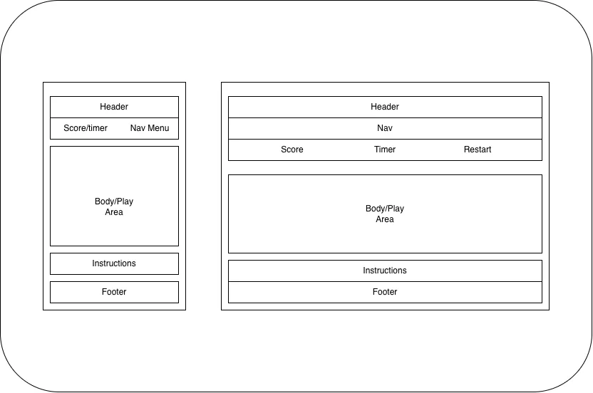

Site Name
Chase It! was chosen because it's short, energetic, and immediately tells the visitor what the game is about — chasing something that doesn't want to be caught. The exclamation point adds urgency and excitement, fitting the fast-paced nature of the game.
Optional domain: chase-it-game.com
Site Purpose
Chase It! is a casual, browser-based game where 6 images actively flee from the user's cursor or finger. The goal is to click or tap each image to freeze it in place before the timer runs out. The site provides:
- A fun, interactive game playable on desktop and mobile
- A live score tracker showing how many images have been caught
- A countdown timer that adds urgency and challenge
- Clear game instructions so any visitor can start playing immediately
Scenarios
These are questions a typical site visitor might ask when arriving at Chase It!:
- 💬 "How do I play / what am I supposed to do?"
- 💬 "How much time do I have to catch all the images?"
- 💬 "Can I play this on my phone with my finger?"
- 💬 "What happens when I catch all 6... do I win?"
Color Schema
The color palette is bright, energetic, and playful and designed to feel like a fun game rather than a formal website.
Typography
Two Google Fonts are used to keep the design fun and readable:
Rounded, bold, and playful. Used for all major headings, the score counter, and the timer display.
Friendly and highly readable. Used for instructions, descriptions, and all body-level text.
Wireframes
Basic layout diagrams showing the structure of the home/game page on mobile and desktop.
